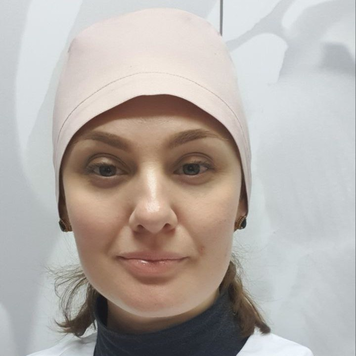

Елена Ласка
Елена Ласка
Механическая чистка лица производится мануально. В процедуре используется распаривающая гидрогелевая маска, которая будет особенно безопасна людям с проявлениями купероза. Далее лицо освобождается от излишней сальности и чёрных комедонов, удаляются милиумы (просянки) если они имеются на лице. После чистки лица наносится поросуживающая маска, которая освежает, глубоко очищает кожу, снимает воспаление и покраснение, способствует быстрому заживлению. По желанию в процедуру можно добавить противовоспалительный пилинг, который имеет действие и интенсивно заживляет воспалительные элементы при высыпаниях на лице.
Комбинированная чистка лица проводится также как и механическая, но в неё дополнительно включена ультразвуковая чистка. Этот вид чистки эффективно очищает кожный покров от ороговевших элементов, убирает продукты жизнедеятельности потовых и сальных желез, улучшает цвет и выравнивает поверхность лица. Также колебания обеспечивают термоэффект – температура внутри клеток повышается. Благодаря этому запускаются естественные обменные процессы восстановления.
Атровматичная чистка лица рассчитана на щадящее очищение ороговевшего слоя кожи без механической обработки. Потому она и называется атровматичной, - поскольку является достаточно комфортной и кожа после неё очень быстро восстанавливается. Может применяться даже для самой чувствительной кожи. После чистки улучшается состояние кожи, устраняется излишний блеск, выравнивается текстура кожи. Кожа приобретает здоровый оттенок.
Ультразвуковая чистка лица – процедура, позволяющая очистить кожу от слоя омертвевших клеток. Эта методика аппаратной косметологии использует действие высокочастотных звуковых волн. Данная процедура производится при помощи специального ультразвукового аппарата. Во время прикосновения ультразвуковой лопатки образуется вибрационная волна похожая на облако. Данный вид чистки усиливает внутриклеточный обмен веществ, стимулирует работу лимфатической системы. Вибрация во время ультразвуковой чистки действует также как микро-массаж, действие ультразвука глубоко очищает кожу от омертвевших клеток, загрязнения, жира, комедонов, пота, при этом не повреждая верхний слой эпидермиса и не вызывая покраснений и припухлостей. Благодаря стимуляции обмена веществ, ультразвуковая чистка способствует выработке эластина и коллагена, усилению обновления тканей.
Молочный пилинг с DMAE – безинъекционное, безболезненное введения DMAE. Рекомендован для всех типов кожи, в особенности сухой и чувствительной. Обеспечивает моментальный лифтинг, увлажняет, осветляет, повышает тургор и способствует сиянию кожи.
Лёгкий пилинг для видимого омоложения. Всесезонный пилинг с мгновенным результатом: выравнивается рельеф, разглаживаются мелкие морщины, повышается увлажнённость и упругость кожи, стимулируется уплотнение дермы, улучшается цвет и внешний вид кожи. Пилинг очень деликатный, поэтому его можно использовать для самой чувствительной кожи.
Фитиновый пилинг с DMAE – является сильным антиоксидантом, осветляет и имеет противовоспалительные свойства, которые способствуют не только эффективному предотвращению появления пигментных пятен, но и быстрому устранению уже существующих. Также фитиновая кислота обладает хорошим омолаживающим и лифтинговым действием.
Комплексный пилинг для век. Высокоэффективный поверхностный химический пилинг для зоны вокруг глаз. Усиливает микроциркуляцию в тканях, стимулирует клеточный обмен, способствует удержанию влаги в коже, благодаря чему разглаживаются мелкие морщины, уходят отеки и припухлости (мешки под глазами), приостанавливается процесс старения, способствует значительному омоложению кожи в зоне вокруг глаз.
Пилинг для проблемной кожи. Высокоэффективный поверхностный химический пилинг и комплекс растительных экстрактов с противовоспалительным эффектом. Улучшает регенерацию и интенсивно заживляет воспалительные элементы, способствует активизации процессов восстановления кожи и нейтрализует чрезмерное выделение кожного сала. Уникальный состав способствует активному оздоровлению кожи и повышению местного иммунитета.
Карбокситерапия (для проблемной кожи). Это процедура увлажнения и повышения иммунитета кожи, коррекция высыпаний, избавления от избыточной сальности кожи, дерматозов, снижение чувствительности кожи. Прекрасно детоксифицирует и осветляет кожу. Также после процедуры карбокситерапии применяется успокаивающая маска. Закрывается процедура интенсивной сывороткой anti-acne, которая усиливает эффект проведенной процедуры.
Карбокситерапия (для лифтинга кожи). Эта процедура улучшает качество кожи, прекрасно увлажняет и подтягивает овал лица. Убирает вялость и атоничность кожи, делает её гладкой и бархатистой, сокращает проявления морщин и линий. Видимый эффект уже после первой процедуры. Также дополнительно после процедуры карбокситерапии применятся омолаживающая маска. Закрывается процедура сывороткой для интенсивного омоложения 3D-лифтинг, которая усиливает эффект проведенной процедуры.
Альгинатная маска увлажняет, улучшает цвет лица, создаёт эффект лифтинга, обладает противоотечными свойствами, идеальна для зрелой кожи (35+). В данной процедуре используются две маски на выбор: полипептидная с мощным лифтинговым и увлажняющим эффектом и маска с миорелаксирующим эффектом, которая прекрасно разглаживает и заполняет морщины, способствует лифтингу и увлажнению. Также используется сыворотка, усиливающая эффект применения маски.
Гидрогелевая маска (с лепестками розы) - уникальная гидрогелевая маска с лепестками розы дарит коже приятные ощущения свежести и увлажнённости. Сочетание коллагена, лепестков и экстракта розы мгновенно улучшают внешний вид кожи, возвращают ей упругость и эластичность. Маска подходит для всех типов кожи – особенно для сухой и чувствительной.
Классический массаж – эта процедура помогает добиться продления молодости кожи и дарит прекрасные минуты полного расслабления.
Пластический массаж – методика механического воздействия на кожу, после которого она приобретает упругость и свежесть. Считается самым эффективным способом вернуть утерянные контуры и овал лица, также убрать явные возрастные изменения.
Массаж по Жаке – в процессе процедуры нормализуется кровообращение, рассасываются подкожные воспаления, активизируются обменные процессы.
Массаж волосистой части головы - активизирует кровообращения и кровоток, улучшает питание мягких тканей, снимает мышечное напряжение, улучшает настроение и общее состояние, уменьшает головные боли, расслабление мышц шейно-воротниковой зоны, снятие спазма, нормализация артериального давления. Улучшение роста волос при аллопеции, избавление от проблем жирности волос, улучшение цвета лица, уменьшение выраженности морщин, заломов, решение проблемы опущения овала лица.
Экспресс омоложение (альгинаты + массаж). Данная процедура включает в себя классический массаж, который оказывает омолаживающее, лимфодренажное, подтягивающее действие, дарящее полное расслабляющее действие. Эта процедура хороша в том случае, когда есть желание совместить отдых и избавление от накопившейся усталости с омолаживающим действием с проработкой всех мышц лица. После процедуры массажа применяется омолаживающая сыворотка, сверху накладывается альгинатная маска, которая пластифицируясь может моделировать овал лица и оказывать омолаживающее и подтягивающее действие.
Фракционная мезотерапия (Дермаштамп) – процедура способствует ускорению выработки коллагеновых и эластиновых волокон в коже. Эта процедура уменьшает период регенерации и восстановления кожи, позволяет добиться значительного эстетического эффекта, не нуждается в дополнительной анестезии. В данной процедуре используется сыворотка Demax.
В уход входит массаж по Жаке, который способствуетрассасыванию подкожных воспаленных элементов, нормализует кровообращение и активизацию обменных процессов. Далее наносится маска для проблемной кожи на основеактивированного угля. Маска влияет на патогенез акне, очищает кожу и способствует сужению расширенных пор, снимает воспаления, нормализует обменные процессы, регулирует деятельность сальных желез. Процедура закрывается пилингом для проблемной кожи, который эффективно восстанавливает кожу и нейтрализует чрезмерное выделение себума, заживляет воспаленные элементы, способствует оздоровлению кожи и поднятию местного иммунитета.
Дарсонваль является прибором, применяемым не только
в косметологии, но
и медицинской
практике. Во время проведения процедуры дарсонвализации производится воздействие на
кожу вакуумным стеклянным электродом, переменными импульсными токами высокого
напряжения, при этом дезинфицируется кожа, повышается тонус и стимулируется
кровообращение. Частоты аппарата по своим физико-химическим свойствам совпадают с
человеческими импульсами (поэтому излучение безопасно для организма человека).
Применение:
- для избавления от угревой сыпи, гнойничков и воспалений на лице, сосудистых
“звездочек”
- для борьбы с застойными пятнами, оставшимися после прыщей
- для снижения жирности лица, что помогает значительно улучшить внешний вид и
снизить риск появления новых воспалений на лице
- для защиты кожи от ранних морщинок и нездорового цвета кожи
- для помощи при облысении, так как при помощи этой процедуры можно укрепить и
простимулировать рост волос
{kind=link}
{kind=link}
{kind=link}
{kind=link}
{kind=link}
{kind=link}
{kind=link}
{kind=link}
{kind=link}